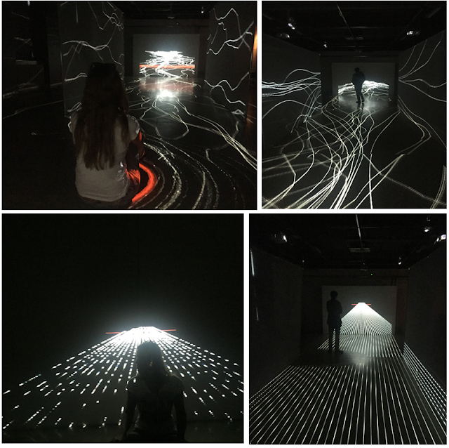

PORTAL
Audio-visual interactive installation

What is it like to move through the fabric of the universe? The authors of this work invite an audience to the art interpretation of one of the most amazing phenomena which existence is assumed by quantum physics - a wormhole, or, in other words, a space-time portal.
The installation emphasizes spatial transformation using visual and sound effects to create a sensation of flowing through an endless stream where audience members experience element refraction. The aesthetic employs minimalism to immerse viewers in an alternative reality.
Technical Details
Software: Touchdesigner
Equipment: 4 Kinect sensors, 7 video projectors, 4-channel sound system, 2 semitransparent screens
Exhibition History
- Cross-Art festival 2015, Erarta Museum, St. Petersburg
- MEDIAIN festival 2017, The New Stage of Alexandrinsky Theatre, St. Petersburg